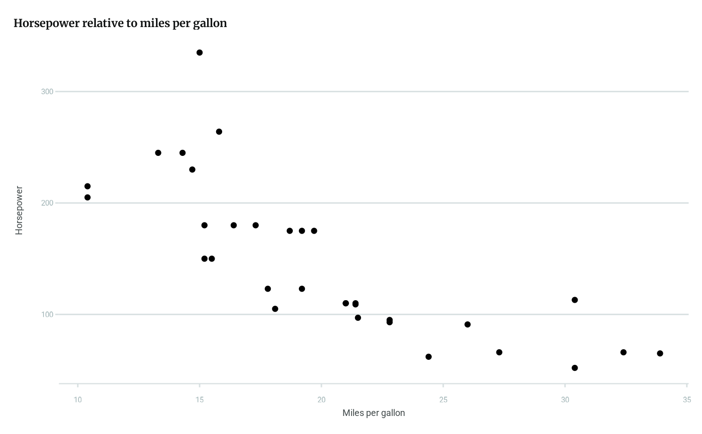

Simple wrapper for sysfonts::font_add_google() and
showtext::showtext_auto() to load the two fonts used in the HDX
website's 2025 redesign,
Merriweather for display
and heading text, and Roboto
for body text, and specify all plots to automatically use showtext. Use to
load the default font families for theme_hdx() and gghdx().
load_hdx_fonts(
display_family = NULL,
display_regular = NULL,
body_family = NULL,
body_regular = NULL
)Arguments
- display_family
Character string for the Merriweather family name to register, used whether the font is downloaded from Google or loaded locally. If
NULL, defaults to"Merriweather", the standard family name. See "Details" in thesysfonts::font_add()documentation for further explanation.- display_regular
Path to the font file for the Merriweather regular font face. If
NULL, defaults to"Merriweather-Regular.ttf", the standard file name downloaded from Merriweather. Used only when no internet connection is available to directly load from Google.- body_family
Character string for the Roboto family name to register, used whether the font is downloaded from Google or loaded locally. If
NULL, defaults to"Roboto", the standard family name.- body_regular
Path to the font file for the Roboto regular font face. If
NULL, defaults to"Roboto-Regular.ttf", the standard file name downloaded from Roboto. Used only when no internet connection is available to directly load from Google.
Value
Nothing, run for side effect of loading the fonts and activating showtext.
Details
By default, both fonts are loaded from Google using
sysfonts::font_add_google(). If an internet connection is unavailable,
then attempts to use locally installed versions of the fonts using
sysfonts::font_add(family, regular). If you have the fonts installed but
still receive an error from this function, check the *_family and
*_regular arguments match your installed fonts.
See also
gghdx() for automatically running load_hdx_fonts(), along
with other styling. load_source_sans_3() to instead load the
original HDX font, kept for backwards compatibility.
Examples
library(ggplot2)
p <- ggplot(mtcars) +
geom_point(
aes(
x = mpg,
y = hp
)
) +
labs(
x = "Miles per gallon",
y = "Horsepower",
title = "Horsepower relative to miles per gallon"
)
# font not loaded so an error will be generated
try(p + theme_hdx())

try(load_hdx_fonts())
try(p + theme_hdx())